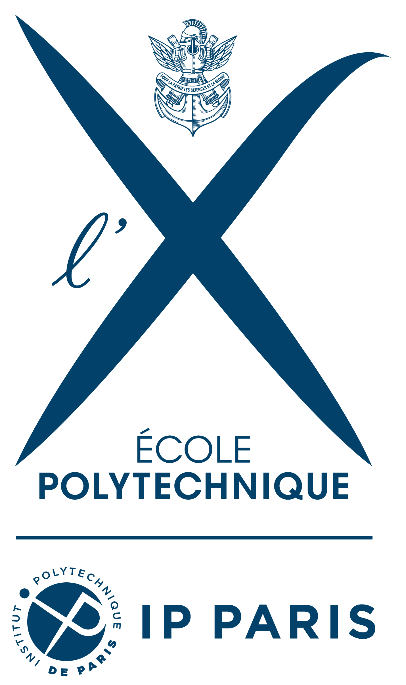
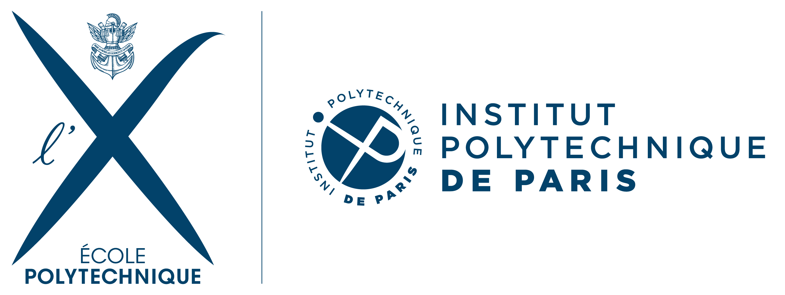

∧
Mauro Escobar


Mauro Escobar
Research Investigación I am interested in Mathematical Optimization, in particular, Stochastic Programming, Linear Programming, Combinatorial and Discrete Optimization, Convex Optimization, and Semidefinite Programming. I also have a broad interest Discrete Mathematics and Computational Complexity Theory.
I did my PhD thesis on defense mechanisms to detect cyber-physical attacks on Power Grids.
Tengo un amplio interés en la Optimización, en particular, Optimización Estocástica, Programación Lineal, Combinatorial, Optimización Discreta, Optimización Convexa y Programación Semidefinida. También tengo interés en las Matemáticas Discretas y en la Teoría de la Complejidad Computacional.
Durante mi doctorado, trabajé en mecanismos de defensa frente a ataques físicos y cibernéticos a redes eléctricas.
Publications Publicaciones
D. Bienstock, M. Escobar, C. Gentile, and y L. Liberti, Mathematical Programming formulations for the Alternating Current Optimal Power Flow problem in en 4OR, vol. 18, no. 3, pp. 249-292, Sept. 2020.
Copy citation to clipboard
D. Bienstock and y M. Escobar, Stochastic Defense Against Complex Grid Attacks in en IEEE Transactions on Control of Network Systems, vol. 7, no. 2, pp. 842-854, Jun. 2020.
Copy citation to clipboard
PhD Thesis Tesis doctoral : Security and Statistics on Power Grids Advisor Profesor guía : Daniel Bienstock.
Copy citation to clipboard
M. Escobar, D. Bienstock, and y M. Chertkov, Learning from Power System Data Stream in en 2019 IEEE Milan PowerTech, Jun. 2019.
Copy citation to clipboard
D. Bienstock and y M. Escobar, Computing Undetectable Attacks on Power Grids in en SIGMETRICS Performance Evaluation Review, vol. 45, no. 2, pp. 115-118, Sept. 2017.
Copy citation to clipboard
M.S. Thesis (in Spanish) Tesis de pregrado : Analysis of Network Coding Algorithms Análisis de algoritmos de codificación de redes Advisor Profesor guía : Marcos Kiwi .
Copy citation to clipboard
Talks Charlas
"Integer Formulation for Computing Transaction Aggregation to Detect Credit Card Fraud ."
CTW 2020 , online .
"Learning from Power System Data Stream ."
IEEE Power Tech 2019 , Milan, Italy.
"Stochastic Defense Against Complex Grid Attacks ."
Risk Day 2019 , Cambridge, UK.
"Cyber-Physical Attacks on Power Grids and Covariance Defense ."
2018 INFORMS Annual Meeting , Phoenix, AZ.
"Cyber-Physical Attacks on Power Grids under the AC model and Stochastic Defense ."
SIAM - Network Science 2018 , Portland, OR.
extended abstract abstract extendido
"Undetectable Cyber-Physical Attacks on Power Grids under the AC model ."
EURO 2018 , Valencia, Spain.
"Machine Learning with PMU signals ."
ISMP 2018 , Bordeaux, France."Analysis on Power Grid Attacks ."
2017 INFORMS Annual Meeting , Houston, TX.
"On Routing Policies for Synchronized Queues ."
2015 INFORMS Annual Meeting , Philadelphia, PA.
slides diapositivas
Code Códigos Teaching Enseñanza I have been Teaching Assistant for Stochastic Models (B.S. and M.S. courses) at the IEOR department with professors Ward Whitt (in 2014), Mariana Olvera-Cravioto (in 2016), and David Yao (in 2015 & 2016). At LIX, I have been Teaching Coordinator for Decision theory, with applications to energy systems with professors Claudia D'Ambrosio and Leo Liberti (in 2020 & 2021).
He sido Profesor Asistente del curso Modelos Estocásticos (cursos de pregrado y magister) en el departamento de IEOR con los profesores Ward Whitt (en 2014), Mariana Olvera-Cravioto (en 2016) y David Yao (en 2015 y 2016). En LIX, he sido profesor coordinador del curso Teoría de la decisión, con aplicaciones en sistemas de energía con los profesores Claudia D'Ambrosio y Leo Liberti (en 2020 y 2021).
Download Descargar (en inglés)
Last updated: January 2021 Última actualización: Enero 2021